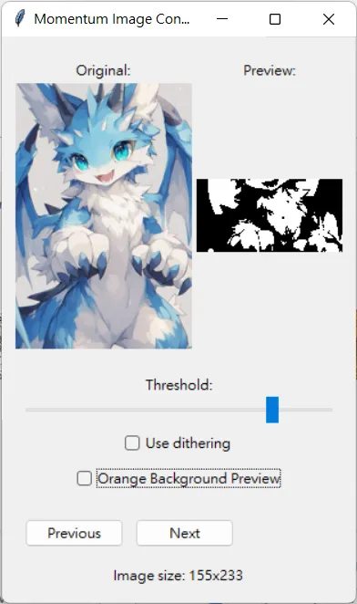
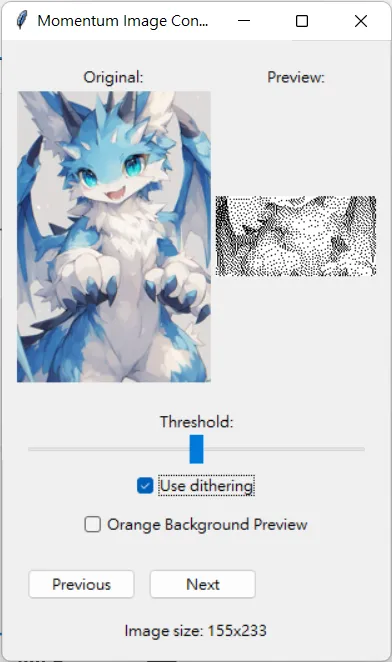
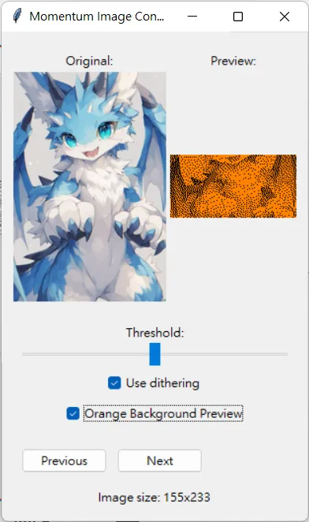

Create Your Own Flipper Wallpapers!
Are you ready to spice up your Flipper's wallpaper? With the Flipper Asset Packer, you can easily convert your own images into custom wallpapers for your device! This tool is designed for anyone who loves customizing their digital space and wants to add a personal touch to their Flipper device with their favorite photos or animation.
How It Works?
Drop Your Photo
Simply place the photo you'd like to use in the same directory as the tool.
Customize Settings
Simply place the photo you'd like to use in the same directory as the tool.
Upload to Flipper
Place the output file in your access pack folder, adjust the animation speed, and voila! You’ve got yourself a personalized wallpaper on your Flipper.
Features
All image size would be automatically scale and cropped. Never gonna give you up.
Threshold
Dithering
Background
Why You'll Love It
- Fully Customizable: From image scaling and cropping to background color choices, you can fine-tune every detail to make your wallpaper stand out.
- Fast and Simple: No technical know-how required. Just upload your photo and let the tool handle the rest!
- Endless Possibilities: Whether it’s a picture of your pet, a cool design, or your latest adventure, you can bring any image to life on your Flipper.
- Instant Preview: View your changes in real time! Make adjustments and see exactly how they’ll look on your device.
Never gonna let you down.